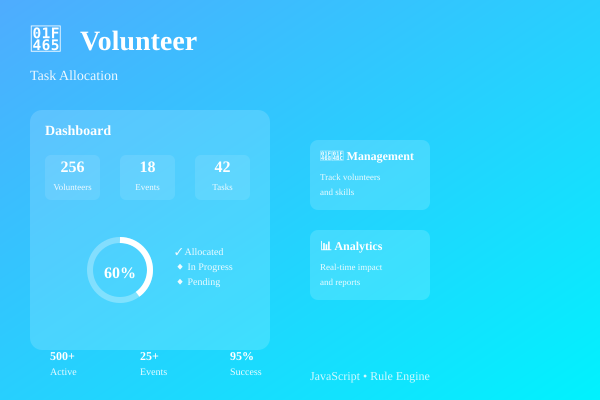

case study — 03 / 04
A rule-based system that matches volunteers to tasks automatically, built for event teams that were assigning people manually.

Organizing 100+ students for workshops and hackathons meant someone manually matching volunteers to tasks based on who they remembered was good at what — slow, inconsistent, and easy to get wrong as the team grew.
This grew directly out of organizing technical workshops and hackathons through my college's Event Organisation Student Club — the allocation problem was one I'd hit firsthand before I ever wrote a line of code for it.